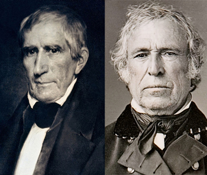

|
The Whig party was the Democratic party's primary opposition
for most of the antebellum era. It was initially founded in
the 1830s by a group of men whose only real point of
agreement was their dislike of president Andrew Jackson. The
name Whig was borrowed from the main opposition party in
Scotland. The American Whigs existed for two decades as an
increasingly divided minority party before collapsing in the
1850s.
Philosophy
The most important of the Whig party's founders was Henry
Clay of Kentucky. Running for president in 1832, he sought
to define the Whig agenda: a high protective tariff,
distribution of money from federal lands to the states for

Henry Clay, the most prominent
member of the Whig Party.
|
internal improvements, and support of the United States
Bank. Clay called this plan the "American System". He lost,
and Jackson was re-elected, running on a anti-bank platform.
The Whigs again experienced defeat at the hands of New York
Democrat Martin Van Buren in 1836.
Over the course of the 1830s and 1840s, the Whig agenda
became increasingly well-defined. The bank issue continued
to be important. Pro-banking Whigs, such as Clay and Daniel
Webster of Massachusetts, saw a strong national banking
system as the necessary for a healthy, growing economy.
Democrats viewed banks as a dangerous concentration of
power, and as such, a grave threat to liberty. Whigs were
proponents of business and business owners, and commercially
minded farmers, while Democrats identified themselves the
guardian of the workingman. Whigs also supported government
financed internal improvements such as roads, canals, and
railroads. They sought to strengthen American industry with
tariffs, a tax on foreign goods. Overwhelmingly native-born
Protestants, Whigs endorsed moral reform, such as the
temperance movement. In addition, the Whigs believed in the
benefits of free labor, upward mobility, and individual
initiative. To this end, they favored government support of
education for the nation's children.
Whigs in the White House
The Whigs gained the White House in 1840 with General
William Henry Harrison, a war hero, heading the ticket. The
Whigs utilized powerful cultural symbols such as the log
cabin, and were able to bring the "plain people" of the
country into the Whig fold. To party leaders' horror,
Harrison died after serving only a month. His
vice-president, John Tyler, was not committed to the Whig
agenda and had been chosen only to gain Southern votes.
|

William Henry Harrison (left) and Zachary Taylor,
the only two men to be elected to the presidency as Whigs.
|
Tyler opposed Whig initiatives, and his presidency weakened
the party. In 1844, Henry Clay lost a second bid for the
presidency, this time to James K. Polk. Despite these
setbacks, several able leaders joined the Whigs in the
1840's, including Abraham Lincoln, Alexander Stephens,
Horace Greeley, William H. Seward, and Edward Everett.
Congressional Whigs opposed the territorial war with
Mexico-"Mr. Polk's War"-in 1846. They were not against
Manifest Destiny, but they did oppose gaining territory
through unprovoked force. Once the war had been won, the
Whigs were heavily divided as to whether or not to support
the Wilmot Proviso, which would have barred slavery in any
territory acquired due to the war. The debate among the
Whigs made clear that the party was becoming increasingly
divided along sectional lines.
In the 1848 election, both Democrats and Whigs sought to
circumvent sectional party division by avoiding firm
positions on slavery. The Whigs, in fact, had no platform at
all. They nominated Zachary Taylor, a hero of the Mexican
War that so many of them had adamantly opposed. The choice
of Virginia-born Taylor divided the Whigs even further.
"Conscience Whigs" of the north would not support a southern
candidate who owned slaves, and who was unlikely to oppose
the expansion of slavery into new territories. Southern
"Cotton Whigs" proclaimed support of Taylor. The splintering
of the Whig Party was accelerating.
Despite lukewarm support from the northern wing of his
party, Taylor won the election by a comfortable margin. To
the surprise of his southern supporters, President Taylor
promptly recommended admitting California and New Mexico to
the Union as free states. This inspired heated debate in the
Congress and across the nation, for to do so would have
upset the balance of power between free and slave states.
Taylor died shortly thereafter, while Whigs Henry Clay and
Daniel Webster worked furiously to bring north and south
together. The resulting Compromise of 1850 was hailed by
optimists as a measure that would bring permanent peace.
California was admitted as a free state, while New Mexico
and Utah were granted territorial status and the right to
decide for themselves whether to have slavery or not. A
stronger fugitive slave law was also put in place.
Ominously, debates over the provisions of the bill had
almost invariably occurred along sectional, rather than
party, lines.
The Party Collapses
Many northern Whigs encouraged Northerners to disobey the
fugitive slave law that was part of the Compromise of 1850.
At the same time, Whig voters were electing increasingly
radical antislavery men to Congress, including Thaddeus
Stevens of Pennsylvania and Benjamin Wade of Ohio. These
antislavery men were often unwilling to compromise, with
Southerners and with members of their own party. Many of
them bolted the party in 1852 when Winfield Scott was chosen
to run for the presidency on a Whig platform that praised
the Compromise of 1850 and promised vigorous enforcement of
the fugitive slave law. Democrat Franklin Pierce defeated
Scott in a landslide. The Whigs would never again field a
presidential candidate.
With the adoption of the Kansas-Nebraska Act in 1854, the
Whig party officially dissolved. The elimination of the
Missouri Compromise line and the adoption of Popular
Sovereignty caused a mass party exodus and eventual
collapse. Former Whigs were absorbed into other parties,
with most Northern Whigs joining the new Republican party
and most Southern Whigs going to the Democrats. Party
politics merged solidly with sectional interests as civil
war seemed increasingly inevitable.
Source: Malcolm J. Rohrbrough, ed., Facts on File Encyclopedia of American
History: Expansion and Reform, 1813 to 1855 (New York: Facts on
File, 2003), 362-364.
|